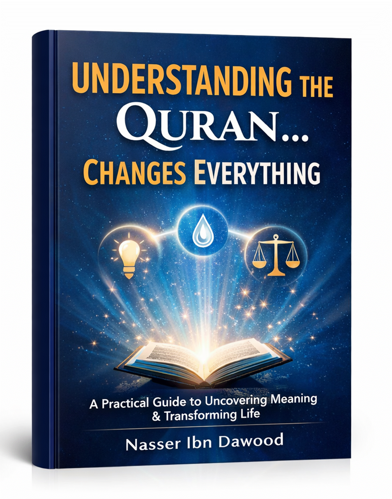

### Based on the original Arabic work by Nasser Habitat
---
Millions read the Qur’an daily. They recite, memorize, and listen with devotion.
Yet for many, **nothing changes**.
Life remains confused. Decisions stay unclear. Old mistakes repeat.
This book begins with a single, uncomfortable question:
> **If the Qur’an is meant to be guidance, light, and clarity… why does it often produce none of these in our actual lives?**
The answer proposed here is simple but radical:
> **The problem is not the Qur’an. The problem is how we approach it.**
This English edition is a condensed conceptual adaptation of the original Arabic work. It presents the core framework — the method, the laws, the human structure, and the transformation plan — in accessible language, without the exhaustive linguistic analysis or classical references.
**For researchers and advanced readers:** The original Arabic version remains the primary source for complete exegesis, detailed tables, and full academic apparatus.
---
Most of us read the Qur’an in one of two ways:
- **Emotional reading** — seeking inspiration, comfort, or spiritual feeling.
- **Informational reading** — seeking meanings, definitions, and explanations.
Both are valuable. But both miss something essential.
There is a third level:
> **Operational reading — asking not just “what does this mean?” but “how does this work in my life?”**
When we hear a word like “light” (nur) or “balance” (mizan) repeatedly, we stop questioning it. We assume we already know what it means.
This assumption freezes the word. It becomes a **fixed meaning** rather than a **living function**.
The book calls this a **“semantic idol”** — a meaning that has stopped working because we have stopped asking what it *does*.
When meaning freezes, a cascade follows:
**Distorted concept → Superficial reading → Disabled function → Confused awareness → Stagnant life**
The goal of this book is to reverse this cascade — starting with a single shift in how we ask questions.
---
Most readers ask: **“What does this word mean?”**
This is a good question. But it is incomplete.
The missing question is:
> **“How does this word work in my life?”**
This shifts attention from definition to function, from information to operation.
- *Old question:* What does light mean? → Answer: guidance, clarity, illumination.
- *New question:* How does light work? → Answer: It reveals, distinguishes, directs.
Suddenly, the word is no longer a definition. It is a **tool**.
1. **Stop assuming** — Approach the word as if for the first time.
2. **Return to the root** — What is the basic idea behind it?
3. **Collect verses** — Find where else the word appears.
4. **Connect the verses** — What links them? What repeats?
5. **Ask: What does this word do?** — Identify its function.
6. **Redefine it in your own words** — Make it alive.
7. **Apply it to your life today** — Where do you need this function?
1. Stop assuming: I think I know “balance” — but do I?
2. Root: measurement, weighing, proportion.
3. Verses: “He set up the balance” (55:7), “do not transgress the balance” (55:8).
4. Connection: balance is linked to justice, prevention of excess.
5. Function: It regulates, calibrates, prevents deviation.
6. My definition: Balance is what keeps me from tilting in any direction.
7. Application: Where is my life out of balance today? A decision? A habit? A reaction?
The Qur’an is not a collection of independent sentences. It is a **network**.
Reading linearly (verse 1, then verse 2, then verse 3) misses the connections.
Instead:
- Choose one concept.
- Gather its occurrences across different chapters.
- Ask: What is the common thread?
- Watch how each verse adds a new dimension.
When verses connect, isolated meanings become a **complete picture**.
---
The Qur’an does not only present beautiful ideas. It presents **operational laws** — systems that govern perception, movement, regulation, and direction.
**Central verse:** “God is the light of the heavens and the earth” (24:35)
**What light does:**
- Reveals what was hidden
- Clarifies what was confused
- Distinguishes between similar things
**The problem is not lack of information.** The problem is lack of light.
You can have all the facts and still be lost — like a person in a dark room full of objects. The objects are there. But vision is absent.
**How to activate light in your life:**
- When confused, ask: “What am I not seeing?”
- When angry, ask: “Am I seeing the full picture?”
- When stuck, ask: “What needs to be revealed?”
**Central verse:** “We made from water every living thing” (21:30)
**What water does:**
- Flows
- Transfers
- Revives
- Takes the shape of its container
**The problem is not lack of knowledge.** The problem is lack of movement.
Understanding without action is like knowing how to swim while never entering the water.
**How to activate water in your life:**
- Every understanding must produce a small action immediately.
- Do not wait for perfect conditions — flow begins with the first step.
- Keep moving, even slowly. Stagnation is death.
**Central verse:** “He set up the balance, so that you do not transgress the balance” (55:7–8)
**What balance does:**
- Sets limits
- Prevents excess
- Maintains equilibrium
**The problem is not lack of intention.** The problem is lack of calibration.
We tilt. We overreact. We lean too far one way, then overcorrect to the other.
**How to activate balance in your life:**
- Before a decision, ask: “Am I tilting?”
- After an action, ask: “Did I go too far or fall short?”
- Build regular review into your week — a personal “weighing scale.”
**Central verse:** “This is the Book — no doubt in it — a guidance” (2:2)
**What the Book does:**
- Collects and organizes
- Provides a reference
- Gives direction
**The problem is not lack of effort.** The problem is lack of orientation.
You can move a lot and still go nowhere — if you have no map.
**How to activate the Book in your life:**
- Return to the same reference points daily.
- Let the Qur’an be your compass, not just your companion.
- Ask: “What direction am I being pointed toward?”
---
These laws do not float in abstraction. They operate within a **structured human system**.
**Central verse:** “They have hearts with which they do not understand” (22:46)
In the Qur’anic framework, the heart is not just an emotional center. It is the **organ of understanding**.
**The three levels of heart failure:**
1. **Hardness** — Information does not penetrate.
2. **Covering** — Information does not arrive.
3. **Sickness** — Information is distorted.
**Why we don’t understand despite knowledge:**
We feed the mind with information but neglect the heart as a tool of understanding. The result is knowledge without transformation.
**How to reactivate the heart:**
- Slow down your reading — from passing through to receiving.
- Ask: “What is this verse doing to me?”
- Be honest with what you see in yourself.
**Central verses:** “By the soul and what shaped it… and inspired it with its corruption and its piety” (91:7–8)
The self is not good by nature, nor evil. It is a **field of weighing**.
**Three states of the self:**
1. **Commanding self** — pushes toward the easier, lower option.
2. **Blaming self** — recognizes the error after the act.
3. **At-rest self** — harmony between understanding and action.
**Why we don’t act despite understanding:**
We understand, but at the moment of choice, we tilt toward immediate ease, or we delay, or we justify.
**How to strengthen the self:**
- Reduce the gap between understanding and action — act quickly.
- Build tiny habits instead of waiting for giant decisions.
- Bring the outcome into present awareness: “What will this choice lead to?”
**Central verse:** “He directs the affair from heaven to earth” (32:5)
Heaven is not just a physical sky. It is the **higher level** from which meaning descends.
**Why we see reality superficially:**
We look at events from below — what happened, who did what — without asking: What is the law behind this? What is the source?
**How to raise your vision:**
- Look for the law, not just the event.
- Connect the visible to the invisible.
- Ask: “What is the direction of the whole before I judge the part?”
---
When the method is applied, the laws are activated, and the human structure is realigned, something unexpected happens:
**The external world does not change — but your perception of it changes completely.**
- Events become signs.
- Coincidences become patterns.
- Randomness becomes order.
**Central verse:** “We will show them Our signs in the horizons and within themselves” (41:53)
The Qur’an is not the only book of signs. The universe is another. The self is another.
When these three are read together — text, world, self — a **single unified meaning** emerges.
The most common failure is not misunderstanding. It is **the gap between knowing and doing**.
**Central verse:** “Why do you say what you do not do?” (61:2)
This gap is not merely moral weakness. It is **structural**.
**How to bridge it:**
1. Every understanding must produce an immediate small action.
2. Reduce the size of the action — start with the smallest possible step.
3. Build consistency before intensity.
4. Review regularly: Did I do what I understood?
**Central verse:** “God does not change the condition of a people until they change what is in themselves” (13:11)
Change is not automatic. It follows a structure:
**Understanding → Decision → Action → Consistency → Transformation**
**A simple template:**
| Step | Question | Example |
|------|----------|---------|
| Understand | What concept needs activation? | Light (clarity in decisions) |
| Decide | What will I do? | I will pause before every important choice |
| Act | What is the smallest daily action? | Ask: “What am I not seeing?” once per day |
| Review | Did I do it? | Evening check |
| Adjust | What needs improvement? | Add a second question next week |
**The secret of transformation:**
Not a powerful beginning — but **small actions repeated consistently over time**.
---
This book began with a problem: reading the Qur’an without transformation.
It proposed a solution: shifting from “what does it mean?” to “how does it work?”
It introduced four operational laws — Light, Water, Balance, Book — and showed how they operate within the human structure of Heart, Self, and Heaven.
It then provided a method to bridge the gap from understanding to action, and a simple plan for daily transformation.
**But one final point remains:**
These laws and methods are not the destination. They are the **path**.
The ultimate purpose is not to master techniques. It is to arrive at a state where:
> You see with clarity.
> You choose with awareness.
> You move with direction.
> You live with presence.
And in that state, the Qur’an is no longer a text you read.
It becomes **the lens through which you see everything**.
---
> **This book does not change what you know — it changes how you see.**
And when your vision changes…
**everything else follows.**
---
## The Four Laws
| Law | Function | Central Verse |
|-----|----------|---------------|
| Light (Nur) | Reveals, clarifies, distinguishes | 24:35 |
| Water (Ma’) | Moves, flows, revives | 21:30 |
| Balance (Mizan) | Regulates, calibrates, prevents excess | 55:7–8 |
| Book (Kitab) | Directs, organizes, guides | 2:2 |
| Structure | Function | Central Verse |
|-----------|----------|---------------|
| Heart (Qalb) | Understanding | 22:46 |
| Self (Nafs) | Choice | 91:7–8 |
| Heaven (Sama’) | Higher determination | 32:5 |
## The Seven-Step Protocol
1. Stop assuming
2. Return to the root
3. Collect verses
4. Connect the verses
5. Ask: What does it do?
6. Redefine in your own words
7. Apply today
**Understanding → Decision → Action → Consistency → Transformation**
---
*This condensed edition is based on the original Arabic work by Nasser Habitat. For the full academic version with complete linguistic analysis, verse networks, and detailed tables, please refer to the original Arabic text.*